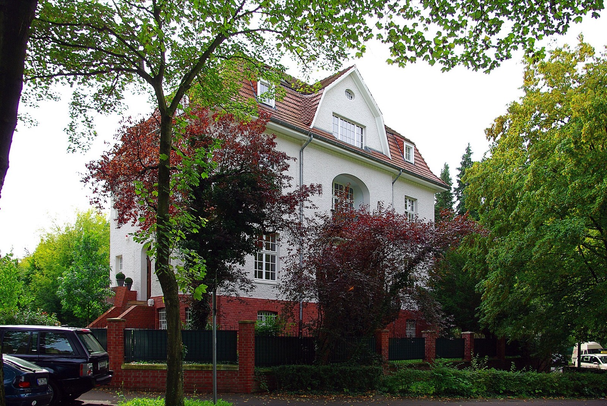

Immobilie in Marienburg verkaufen?Der Stadtteil verändert sich gerade stark.
568 Wohnungen wurden hier in einem Jahr fertiggestellt, mehr als in jedem anderen Kölner Stadtteil. Für Eigentümer heißt das: Der Vergleichsmarkt ist ein anderer als noch vor drei Jahren.
Was könnte Ihre Immobilie in Köln-Marienburg erzielen?
In sechs Schritten zu einer realistischen Einschätzung. Kostenlos, unverbindlich und ohne Vertrag. Womit fangen wir an?
Andere Objektart wählenEin Stadtteil, zwei völlig verschiedene Märkte
Der Gutachterausschuss weist für Marienburg zwei Preisniveaus aus, und sie liegen weit auseinander. Wichtig ist dabei die Zahl der ausgewerteten Verträge — sie sagt, wie belastbar ein Wert überhaupt ist.
Zwischen beiden liegen 4.204 Euro je Quadratmeter. Bei einer Wohnung von 150 Quadratmetern sind das über 630.000 Euro Unterschied — für dieselbe Fläche im selben Stadtteil.
Ein gemittelter „Quadratmeterpreis Marienburg" verrechnet also einen knappen, kaum vergleichbaren Bestandsmarkt mit einem gerade entstehenden Neubauquartier. Für die Bewertung einer einzelnen Immobilie ist ein solcher Mischwert unbrauchbar — er beschreibt keine der beiden Wirklichkeiten.
Und noch etwas steht in diesen Zahlen. Der Neubauwert stammt aus elf beurkundeten Verträgen, der Bestandswert aus 47. Bei elf Fällen verschiebt jeder einzelne Verkauf den Median spürbar — ein besonders großes oder besonders kleines Objekt reicht. Wer eine Immobilie in Marienburg bewertet, sollte deshalb wissen, auf wie vielen Fällen eine Zahl beruht, bevor er sie als Maßstab nimmt.
Woher die 568 Wohnungen kommen
Der Neubau in Marienburg verteilt sich nicht über den Stadtteil — er steht fast vollständig an einer Stelle. Am Raderberggürtel 50, auf dem früheren Gelände der Deutschen Welle, entsteht das Quartier „Die Welle".
Zum Vergleich: Marienburg hatte vorher rund 4.416 Wohnungen. Ein einzelnes Projekt fügt dem Stadtteil also gut ein Sechstel hinzu — und zwar Geschosswohnungen in einem Viertel, das für freistehende Häuser bekannt ist.
Was das für Eigentümer bedeutet
Für Villen und große Einfamilienhäuser ändert sich dadurch wenig. Sie bedienen eine Nachfrage, die Neubauwohnungen nicht bedienen können: Grundstück, Architektur, Privatsphäre, gewachsener Baumbestand. Wer so ein Objekt verkauft, konkurriert nicht mit der Welle, sondern mit den wenigen vergleichbaren Häusern, die gleichzeitig am Markt sind — und davon gibt es selten mehr als eine Handvoll.
Anders liegt es bei Eigentumswohnungen im Bestand. Sie treffen ab jetzt auf ein Angebot von mehreren hundert Neubauwohnungen mit aktuellem Energiestandard, Aufzug, Tiefgarage und Erstbezug. Der Preisabstand von 74 Prozent zeigt zwar, dass Käufer dafür deutlich mehr zahlen — aber eine Bestandswohnung muss ihren Vorteil jetzt aktiv zeigen: mehr Fläche fürs Geld, gewachsene Lage, oft der größere Zuschnitt.
Der Bodenrichtwert kann in Marienburg nicht differenzieren
Für ganz Marienburg weist BORIS NRW zum Stichtag 1. Januar 2026 eine einzige Bodenrichtwertzone aus: 2.100 Euro je Quadratmeter. Damit gehört Marienburg zu nur vier Kölner Stadtteilen mit einer einzigen Zone — Dellbrück hat fünfzehn, Rath-Heumar und Brück je vierzehn, Lindenthal zehn.
Das ist der amtliche Beleg für Ihre Frage. Eine Zone bedeutet: Der Bodenrichtwert setzt für die Villa in ruhiger Lage am Südpark denselben Wert an wie für ein Grundstück an einer stark befahrenen Straße. Die Unterschiede, die in Marienburg tatsächlich über den Preis entscheiden — Lage innerhalb des Viertels, Zuschnitt, Baumbestand, Einsehbarkeit —, kommen in dieser Zahl gar nicht vor. Sie ist als Ausgangspunkt richtig und als Bewertung unbrauchbar.
Hinzu kommt eine Eigenheit, die in Marienburg stärker wiegt als anderswo: Der Bodenwert kann den Gebäudewert übersteigen.
Rechnen Sie es für Ihr Grundstück nach
Der Bodenrichtwert ist für ganz Marienburg derselbe. Was daraus für Ihr Grundstück folgt, hängt allein an der Fläche — und daran, wie viel Wohnfläche darauf steht.
Gerechnet wird ausschließlich mit dem amtlichen Bodenrichtwert von 2.100 € je Quadratmeter (BORIS NRW, Stichtag 1. Januar 2026) und dem Median der Kölner Wohnungsverkäufe. Das ist keine Bewertung: Zustand, Architektur, Denkmalschutz, Ausrichtung und Zuschnitt fehlen in dieser Rechnung vollständig — und genau sie entscheiden in Marienburg über den Preis.
Warum 250 Quadratmeter noch keinen Preis ergeben
Nehmen wir zwei Häuser in Marienburg, beide mit 250 Quadratmetern Wohnfläche. Auf dem Papier sind sie gleich. Am Markt sind sie es nicht — und der Unterschied liegt vor allem unter dem Haus.
| Grundstück | Bodenwert | Unterschied zum kleineren |
|---|---|---|
| 400 m² | 840.000 € | — |
| 700 m² | 1.470.000 € | +630.000 € |
| 1.200 m² | 2.520.000 € | +1.680.000 € |
Zwei Häuser mit identischer Wohnfläche können also allein über das Grundstück mehr als 1,6 Millionen Euro auseinanderliegen — bevor über Architektur, Zustand, Ausstattung oder Denkmalschutz überhaupt gesprochen wurde.
Deshalb führt der Quadratmeterpreis hier besonders weit in die Irre. Die 5.684 Euro je Quadratmeter aus der Statistik stammen aus dem Verkauf von Eigentumswohnungen. Auf 250 Quadratmeter gerechnet ergäbe das rund 1,42 Millionen Euro — weniger als der reine Bodenwert eines 700-Quadratmeter-Grundstücks in derselben Zone. Ein Villengrundstück lässt sich mit einem Wohnungspreis schlicht nicht bewerten. Dafür braucht es das Sachwertverfahren, Vergleichsobjekte aus derselben Preisklasse und eine Einschätzung, wie viele vergleichbare Häuser gerade sonst noch angeboten werden.
Denkmalschutz: Einschränkung und Argument zugleich
In einem Viertel, dessen Bestand großteils aus der Zeit vor dem Ersten Weltkrieg stammt, ist Denkmalschutz keine Randfrage. Er wirkt in beide Richtungen — und beides gehört vor die Vermarktung, nicht mittendrin geklärt.
Was er einschränkt
- Veränderungen am Erscheinungsbild brauchen eine denkmalrechtliche Erlaubnis — das betrifft Fenster, Dach, Fassade und oft auch die Farbgebung.
- Energetische Modernisierung ist möglich, aber aufwendiger: Innendämmung statt Wärmedämmverbundsystem, Sonderlösungen bei Fenstern.
- Anbauten und Aufstockungen sind schwieriger durchzusetzen als bei ungeschützten Objekten.
- Auch das Umfeld kann geschützt sein — bei Ensembleschutz greifen die Regeln über das einzelne Gebäude hinaus.
Was er wert ist
- Erhöhte Absetzung für Baudenkmäler nach den §§ 7i und 10f EStG — für Käufer ein handfester Rechenposten, der die Finanzierung verändert.
- Die Substanz selbst ist das Verkaufsargument: originale Details, Raumhöhen und Bauqualität lassen sich nicht nachbauen.
- Der Schutz gilt auch für die Nachbarschaft — das sichert das Umfeld gegen Veränderungen, die eine Lage entwerten könnten.
- Die Käufergruppe ist kleiner, aber gezielter: Wer ein Denkmal sucht, sucht es bewusst.
Vor der Vermarktung zu klären. Steht das Objekt in der Denkmalliste, und mit welchem Umfang? Gibt es Auflagen aus früheren Genehmigungen? Liegen die denkmalrechtlichen Erlaubnisse für bereits durchgeführte Arbeiten vor? Diese Fragen kommen von Kaufinteressenten und ihren Banken — und eine offene Antwort an dieser Stelle bremst den Verkauf spürbar. Steuerliche Fragen zur erhöhten Absetzung gehören zum Steuerberater; wir sorgen dafür, dass die Unterlagen vorliegen, auf die er sich stützen kann.
Wer kauft in Marienburg?
Bei Kaufpreisen, die schnell im siebenstelligen Bereich liegen, ist die Käufergruppe klein. Sie über Reichweite erreichen zu wollen, führt vor allem zu Besichtigungen mit Menschen, die nicht kaufen können. Deshalb ist die erste Frage nicht, wie viele Interessenten sich melden, sondern welche.
Aus dieser Gruppe ergibt sich auch, wie vermarktet wird. Ein öffentliches Inserat erreicht alle — auch die, die nur schauen wollen. Bei Objekten, deren Eigentümer nicht öffentlich mit dem Verkauf in Verbindung gebracht werden möchten, ist die gezielte Ansprache vorgemerkter Interessenten oft der bessere Weg. Was davon passt, hängt vom Objekt und von Ihren Vorstellungen ab und wird vorher besprochen.
Marienburg unter Kölns Spitzenlagen
Marienburg wird oft in einem Atemzug mit Hahnwald und Bayenthal genannt. Die Zahlen zeigen, dass die drei sehr unterschiedlich funktionieren.
| Stadtteil | Bestand je m² | Bodenrichtwert | BRW-Zonen | Wohnfläche je Einwohner | Neubau 2025 |
|---|---|---|---|---|---|
| Hahnwald | 7.952 € | 1.270 € | 1 | 98,7 m² | 17 |
| Marienburg | 5.684 € | 2.100 € | 1 | 65,9 m² | 568 |
| Bayenthal | 5.921 € | 2.830 € | 3 | 41,9 m² | 52 |
| Lindenthal | 5.569 € | 2.120 € | 10 | 48,1 m² | 54 |
Gutachterausschuss für Grundstückswerte in der Stadt Köln (Weiterverkäufe von Eigentumswohnungen), BORIS NRW und Statistischer Datenkatalog der Stadt Köln.
Bemerkenswert ist der Vergleich mit Hahnwald: Dort liegt der Wohnungspreis 40 Prozent höher, der Bodenrichtwert aber deutlich niedriger. Der Grund ist die Bebauungsdichte — in Hahnwald steht wenig Haus auf viel Grundstück, in Marienburg deutlich mehr. Der Bodenrichtwert bildet ab, was je Quadratmeter Grundstück gebaut werden darf, nicht wie exklusiv eine Lage wirkt.
Und die letzte Spalte erklärt, warum diese Seite anders aufgebaut ist als unsere übrigen Veedelseiten: 568 gegen 17, 52 und 54. In keiner anderen Spitzenlage Kölns verändert sich gerade so viel.
Wie wir eine Immobilie in Marienburg bewerten
Weil die üblichen Kennzahlen hier so wenig hergeben, verschiebt sich das Gewicht auf die Einzelbetrachtung. Das sind die Punkte, die wir vor Ort ansehen — und die im Exposé später den Unterschied machen:
Dazu kommt bei Objekten dieser Preisklasse die Frage der Diskretion. Nicht jeder Eigentümer möchte sein Haus öffentlich inseriert sehen; manchmal ist die gezielte Ansprache vorgemerkter Interessenten der bessere Weg. Auch das gehört zur Strategie und wird vorher besprochen, nicht nachträglich.
Häufige Fragen zum Immobilienverkauf in Köln-Marienburg
Was ist eine Immobilie in Marienburg wert?
Das hängt stärker vom Einzelfall ab als in fast jedem anderen Kölner Stadtteil. Der Gutachterausschuss weist für 2025 zwei Werte aus: 5.684 Euro je Quadratmeter für Eigentumswohnungen im Weiterverkauf (aus 47 Kaufverträgen) und 9.888 Euro im Neubau (aus 11 Verträgen). Für Villen und große Einfamilienhäuser taugen beide Werte nicht — dort entscheidet der Grundstückswert mit, der bei 2.100 Euro je Quadratmeter und 700 Quadratmetern Fläche allein bei rund 1,47 Millionen Euro liegt.
Warum wird in Marienburg so viel gebaut?
2025 wurden 568 Wohnungen fertiggestellt — mehr als in jedem anderen der 87 Kölner Stadtteile, und gemessen am Bestand von 4.416 Wohnungen ein Zuwachs von 12,9 Prozent in einem Jahr. Fast alles davon entfällt auf ein Projekt: „Die Welle" am Raderberggürtel 50, auf dem früheren Gelände der Deutschen Welle. Dort entstehen in drei Baufeldern 752 Wohnungen, davon 70 öffentlich gefördert, dazu rund 6.100 Quadratmeter Gewerbefläche und eine Kita. Die Fertigstellung ist für 2026 geplant.
Wie hoch ist der Bodenrichtwert in Marienburg?
2.100 Euro je Quadratmeter zum Stichtag 1. Januar 2026 — und zwar für den gesamten Stadtteil. Marienburg ist einer von nur vier Kölner Stadtteilen mit einer einzigen Bodenrichtwertzone; Dellbrück hat zum Vergleich fünfzehn. Das bedeutet, dass der amtliche Wert nicht zwischen ruhigen und stark befahrenen Lagen innerhalb Marienburgs unterscheidet. Er ist ein Ausgangspunkt, aber keine Bewertung.
Mindert der Neubau den Wert meiner Villa?
Für freistehende Häuser auf großen Grundstücken ist der Einfluss gering: Sie bedienen eine Nachfrage, die eine Neubauwohnung nicht bedienen kann. Der Wettbewerb entsteht dort mit den wenigen vergleichbaren Häusern, die gleichzeitig angeboten werden. Anders sieht es bei Eigentumswohnungen im Bestand aus — sie treffen jetzt auf mehrere hundert Neubauwohnungen mit Erstbezug, Aufzug und aktuellem Energiestandard und müssen ihre eigenen Vorteile aktiv zeigen.
Können Sie diskret verkaufen?
Ja. Bei Objekten dieser Preisklasse ist die gezielte Ansprache vorgemerkter Interessenten häufig sinnvoller als ein öffentliches Inserat — sowohl aus Rücksicht auf die Privatsphäre als auch, weil die passende Käufergruppe klein und über Reichweite ohnehin schwer zu erreichen ist. Ob offen oder diskret vermarktet wird, entscheiden wir vorher gemeinsam und nicht nachträglich. Mehr dazu auf unserer Seite Immobilie diskret verkaufen.
Was ist bei einem denkmalgeschützten Haus zu beachten?
Denkmalschutz wirkt in beide Richtungen: Er schränkt bauliche Veränderungen ein, eröffnet Käufern aber auch steuerliche Möglichkeiten. Entscheidend ist, den Status und den Umfang der Unterschutzstellung vor der Vermarktung zu klären — Kaufinteressenten und ihre finanzierenden Banken fragen früh danach, und eine offene Frage an dieser Stelle bremst den Verkaufsprozess spürbar.
Marienburg verkauft man nicht nach Schema F
Was Ihr Haus, Ihre Wohnung oder Ihr Grundstück wert ist, ergibt sich hier nicht aus einer Tabelle. Es ergibt sich aus dem Zusammenspiel von Grundstück, Substanz, Lage innerhalb des Viertels und der Frage, wie viele vergleichbare Objekte gerade sonst noch am Markt sind.
Genau das sehe ich mir vor Ort an. Sie müssen dafür weder Unterlagen zusammensuchen noch einen Auftrag erteilen — und wenn Sie diskret bleiben möchten, besprechen wir das gleich zu Beginn.
Oder direkt: +49 162 8811110 — kostenlos und unverbindlich.
Bildnachweis: Unter den Ulmen 96: Severinus1970, CC BY-SA 3.0 · Unter den Ulmen 2: GeorgDerReisende, CC BY-SA 4.0, · Südpark: Severinus1970, CC BY-SA 3.0, alle über Wikimedia Commons. Marktdaten: Gutachterausschuss für Grundstückswerte in der Stadt Köln, BORIS NRW und Statistischer Datenkatalog der Stadt Köln. Angaben zum Projekt „Die Welle" nach Herstellerangaben des ausführenden Bauunternehmens.
Was ist Ihre Immobilie in Köln-Marienburg wert?
Erste Einschätzung kostenlos, ohne Auftrag und ohne Umwege.